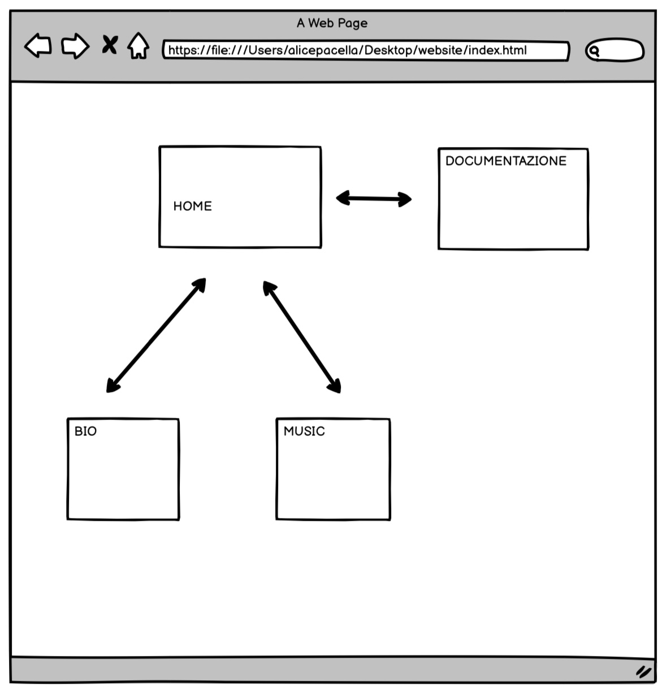
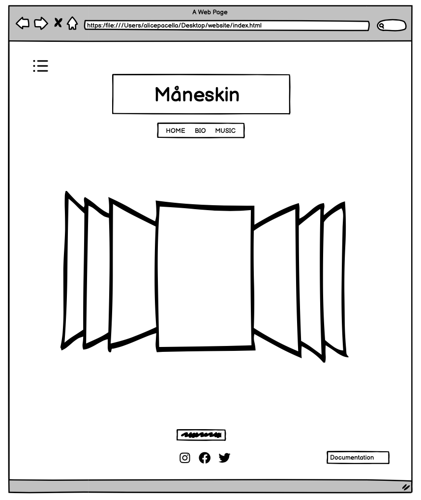
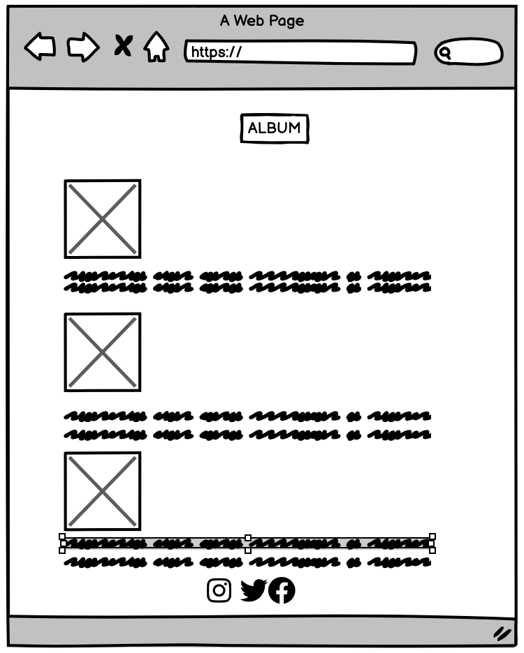
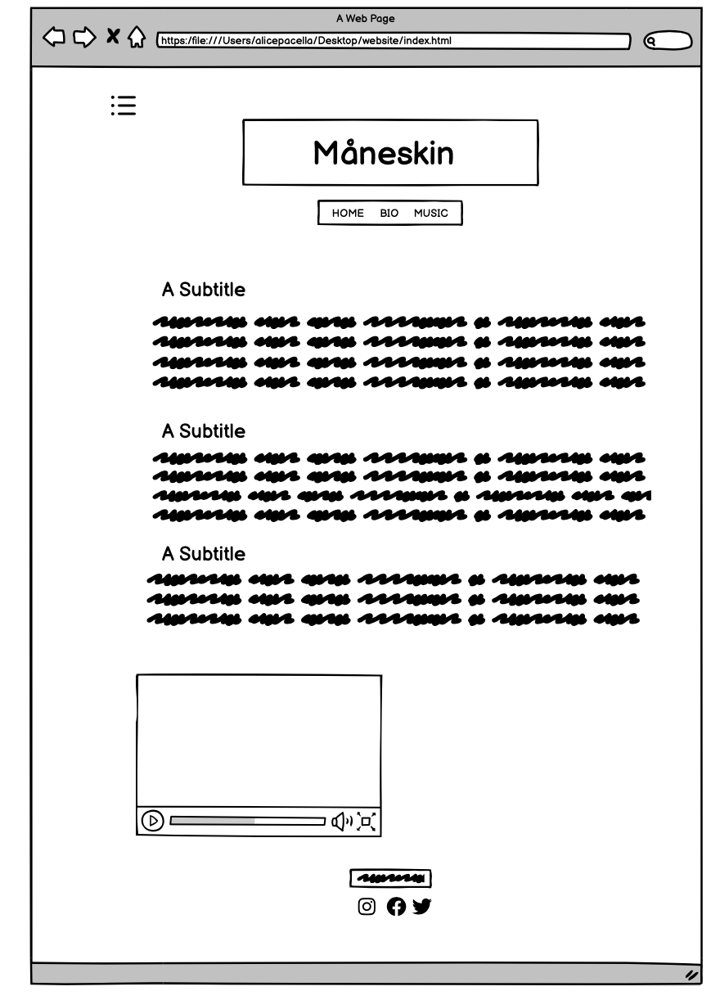
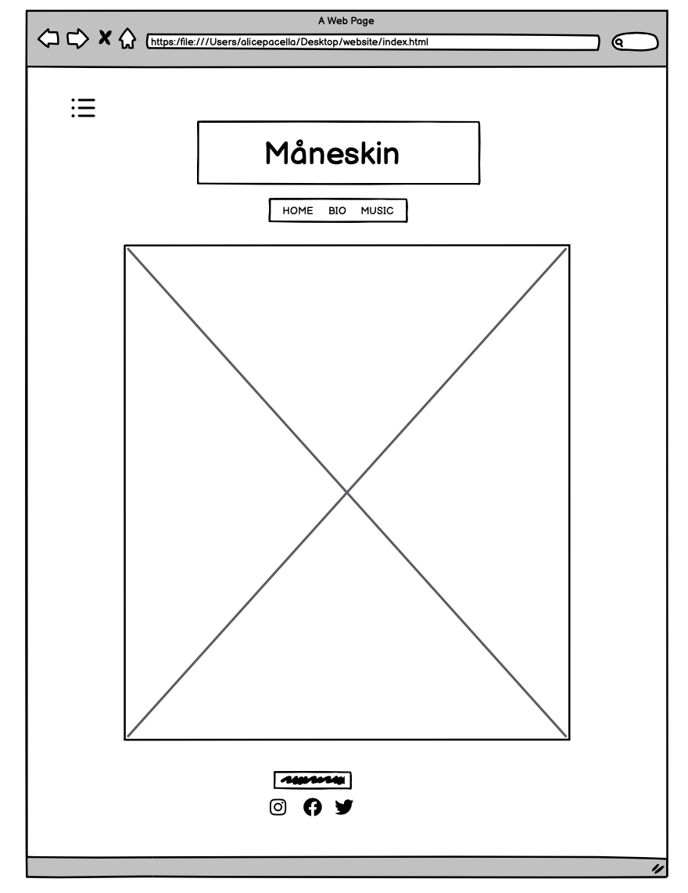

DOCUMENTAZIONE
Abstract
Il sito ha come proposito quello di far meglio conoscere il gruppo musicale Måneskin, a partire dalle origini fino ad arrivare ai successi più conosciuti. Viene presentato un excursus che va dalla presentazione attraverso immagini dei membri della band, passando dalla biografia contenente le informazioni principali e qualche curiosità, fino ad arrivare alla playlist di Spotify con i maggiori successi musicali. I colori scelti, nero, rosso, bianco, esprimono al meglio l'animo rock della band musicale.
PROGECT MANAGEMENT PLAN
1. Benchmarking
Obiettivo: l'obiettivo del sito è quello di mettere in luce esclusivamente la band fornendo informazioni utili per un primo approccio con quest'ultima, sia dal punto di vista biografico che dal punto di vista musicale.
Target:il sito è indirizzato ad un pubblico principalmente under 40, mentre la lingua scelta, l'inglese, punta ad essere il più inclusivo possibile.
Competitors: i maggiori competitors individuati sono sicuramente Spotify, che offre la playlist musicale; OndaRock, un sito musicale dedicato alla musica rock; Sentireascoltare, dove sono presenti numerose informazioni sulla band.
Tuttavia si tratta di blog o siti musicali che trattano solo in parte la band: nessuno è dedicato esclusivamente ai Måneskin.
2. Struttura e layout





3. Look and feel
Nella homepage del sito, l'utente viene accolto da un carosello di immagini della band, oltre che dal nome in grande della stessa band che farà da cornice a tutte le pagine. Immediatamente sotto troviamo un menu di navigazione semplice con tre voci di: Home, Bio e Musica. In alto a sinistra, troviamo, invece, un ulteriore menu di navigazione fisso che, al rimpicciolirsi della pagina, diventa un burger-menu. In questo modo, l'utente ha la possibilità di cambiare pagina anche nel caso in cui si trovasse a piè di pagina. Nella pagina Bio, vi è una componente descrittiva più importante che si conclude con l'aggiunta di un video-intervista della band, così da rendere più interattiva l'azione dell'utente. Nella pagina Musica, invece, troviamo un collegamento diretto con la playlist di Spotify contenente i maggiori successi della band così che l'utente possa ascoltare i brani interagendo direttamente con il sito. Lo stile è semplice, facile e intuitivo.
I colori maggiormente utilizzati sono il rosso, in una nuance più scura (#363532), il nero, il bianco ed infine il grigio, light (lightgrey) per i testi e dark (#363532) per altri elementi, colori che contribuiscono a rispettare la basicità del sito.
In fondo alla pagina sono stati inseriti i collegamenti diretti con le pagine social della band. Inoltre, sempre per facilitare l'esperienza dell'utente con il sito, è stato personalizzato ulteriormente con l'aggiunta di un Favicon, così che funga da segnalibro.
4. Linguaggi e strumenti
I linguaggi utilizzati per la creazione del sito web sono HTML, CSS e JavaScript.
Gli strumenti utilizzati, invece, sono:
•SublimeText per la creazione
•Google Fonts per la scelta delle font
•Fontpair per l'abbinamento delle font
•Adobe Color per la scelta dei colori
•Fontawesome per l'inserimento delle icone
•Bootstrap per la creazione di menu, carosello ecc.
•Favicon per l'icona del title
•Balsamiq per la realizzazione della struttura del sito
•Google Images per la scelta delle immagini
•Youtube per l'inserimento del video/intervista
•GitHub per la pubblicazione
COMMUNICATION STRATEGY
1. Background
A seguito di una ricerca sul web, ho potuto constatare che non esisteva un sito interamente dedicato alla band dei Måneskin: la maggior parte si sofferma ad una descrizione biografica o presentazione delle ultime uscite. Diversamente dagli altri, quindi, questo sito nasce esclusivamente con l'idea di trattare la band a 360 gradi.
2. Obiettivi comunicativi
L'obiettivo è quello di offrire uno sguardo di insieme e, allo stesso tempo ravvicinato su una band ormai internazionale. In questo modo, chi stesse cercando informazioni per la prima volta, si troverebbe di fronte ad un sito che contiene la maggior parte delle cose principali ricercate circa la band. In questo modo, non è necessario fare ulteriori ricerche o cambiare pagina.
3. Target Audience e Messaggio
Per la sua semplicità nella fruizione, il sito potrebbe facilmente un ampio target di persone. Tuttavia, il tema scelto potrebbe limitare le ricerche ad una fascia d'età compresa sotto gli under 40. Il messaggio centrale è sicuramente la "promozione" della band rock.
4. Promozione
La promozione del sito è avvenuta tramite passaparole tra amici, Whatsapp e attraverso la creazione di una pagina Instagram.
5. Valutazione dei risultati
Il numero di 20 like prefissato è stato raggiunto con successo.